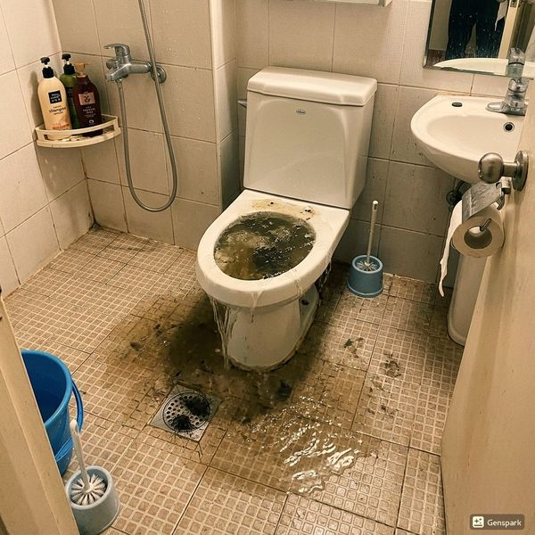

제우스시설관리 | 2025년 4월
싱크대 막힘의 가장 흔한 원인은 기름때입니다. 조리 시 사용한 식용유, 고기 기름, 버터 등이 배수관에 들어가면 차가운 배관 벽면에서 응고되어 점차 축적됩니다.
뜨거운 상태의 기름은 액체이지만, 배관을 지나면서 온도가 내려가면 고체로 변합니다. 이 기름층 위에 음식물 찌꺼기, 세제 잔여물이 달라붙으면서 점차 배관 지름이 좁아집니다. 처음에는 배수 속도가 약간 느려지다가, 결국 완전히 막히게 됩니다.
많은 분들이 뜨거운 물을 부어 기름을 녹이려 합니다. 일시적으로는 효과가 있지만, 녹은 기름이 배관 하류에서 다시 응고되어 더 깊은 곳에서 막힘이 발생합니다. 화학 세정제(가성소다 등)는 기름 분해 효과가 있지만, 배관을 부식시켜 장기적으로 더 큰 문제를 만듭니다.
제우스시설관리는 다음과 같은 전문 장비로 기름때를 확실히 제거합니다:
✅ 내시경 카메라 진단 - 기름때 축적 위치와 정도를 정확히 파악
✅ 드레인 기계 - 스프링 와이어로 기름때 덩어리를 물리적으로 파쇄
✅ 고압세척기 - 최대 200bar 고압수로 배관 내벽의 기름때 완전 제거
1. 기름은 절대 싱크대에 버리지 마세요. 조리 후 남은 기름은 키친타월로 닦거나, 별도 용기에 모아서 종량제 봉투에 버립니다.
2. 설거지 전 접시를 닦아내세요. 기름기가 많은 접시는 키친타월로 먼저 닦은 후 설거지합니다.
3. 정기적으로 뜨거운 물을 흘려보내세요. 주 1~2회 60도 정도의 뜨거운 물을 2~3분간 흘려보내면 초기 기름 축적을 방지할 수 있습니다.
4. 6개월~1년에 1회 전문 세척을 받으세요. 특히 음식점, 기름 조리가 잦은 가정은 정기적인 배관 세척이 필수입니다.
